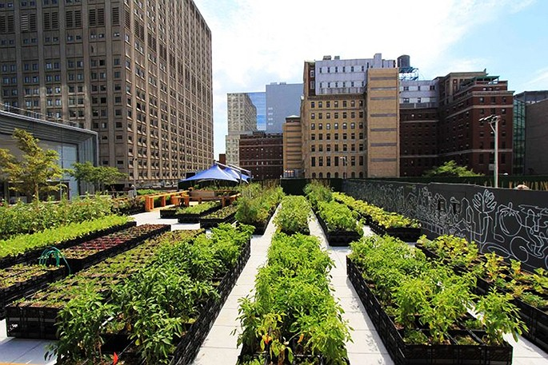

Descripción del Evento
Iníciate en el cultivo ecológico desde tu hogar. Actividad práctica y participativa en A Coruña.
Ubicación
Presencial – Parque de Santa Margarita, A Coruña, Galicia
Organizado por
Urban Garden Colectivo
Fecha: 12 de julio 2025 – 11:00h
Duración: 1,5 horas
Iníciate en el cultivo ecológico desde tu hogar. Actividad práctica y participativa en A Coruña.
Presencial – Parque de Santa Margarita, A Coruña, Galicia
Urban Garden Colectivo